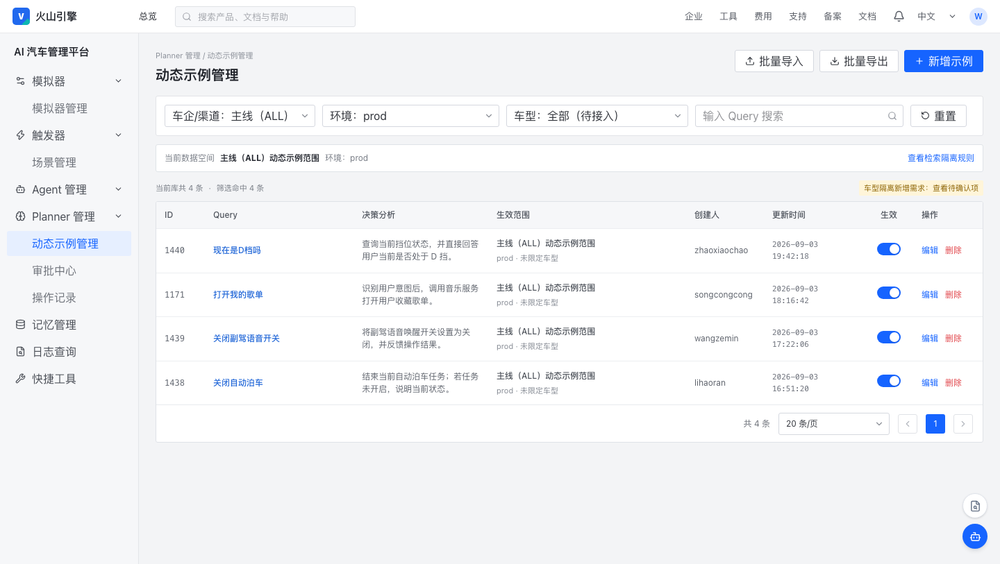
P01
动态示例管理首页
复用现有管理后台骨架，保留 Query 搜索、环境切换、列表和操作入口。
打开交互原型围绕“新增前查重、批量维护、单条审核上线、关键动作留痕、按业务范围准确检索”完善 Planner 动态示例后台。本文以最新会议结论为准，明确区分维护侧查重与运行时检索两套规则。
先看最终要解决什么，以及最容易混淆的两条规则。
单条与批量新增都进入查重流程，展示相似记录及其适用范围，帮助维护者判断是复用、编辑旧记录，还是保留一条范围不同的新记录。
用固定模板完成新增、修改、删除；先校验、再确认写入，报告可下载，错误在本地 Excel 修复后重新上传。
本期按车企/渠道、环境和舱域隔离，赛力斯舱内/舱外参与运行时检索；车型只保留需求预览，参数、字典和运行时能力尚未交付。
角色按本次需求中的操作责任划分，不等同于后台已有的完整 RBAC 角色系统。
| 角色 / 人员 | 主要目标 | 本期权限或责任 | 备注 |
|---|---|---|---|
| 普通维护者 | 新增、修改动态示例并查看处理结果 | 查看可访问的数据；单条新增/编辑并提交审批；只查看自己的审批结果 | 已确认 |
| 审核人 / 管理员 王泽民、赵晓朝 | 把控上线质量与批量操作风险 | 查看全量审批；通过/驳回；执行批量导入和全量导出；第一版用服务端白名单控制 | 首版口径 |
| 王泽民 | 需求与业务规则收口 | PRD Owner、范围口径、验收结论 | 飞书 PRD 作者 |
| 赵晓朝 | 动态示例维护流程与审核可用性 | 业务评审、审核、验收 | 会议参与人 |
| 徐燃 | 服务端可行性与接口方案 | 查重、导入、审批、权限和检索隔离的服务端评估 | 车型请求参数仍待确认 |
| 樊文涛 | 后台前端交互落地 | 列表、表单、报告、审批中心与导出交互评估 | 会议参与人 |
| 李浩然 | 排期协同 | 跟进研发排期与资源 | 会议参与人 |
为什么需要二期，以及一期已经具备哪些能力。
动态示例是一组 Query → 决策分析 的示例数据。运行时会把符合范围且语义相关的示例注入 Planner 的 {{scenario_sample}}，帮助模型生成更符合预期的决策。平台一期替代了人工维护 Excel 的方式。
本期目标用可验收结果描述，不以“页面上多了字段”作为完成标准。
说明：原 PRD 中“重复示例新增率 0、相似度检查 100%”理解为所有新增都经过检查并被提醒；会议已确认不做硬拦截，因此不能把“库里永远没有相似记录”作为验收指标。
范围只保留飞书 PRD 与会议中出现的能力。
| 模块 | 本期交付 | 优先级 | 范围说明 |
|---|---|---|---|
| 单条查重 | 主动检查、六种状态、全范围相似结果、软提醒、提交二查 | P0 | 不提供相似度阈值配置，不展示分数，不硬拦截 |
| 批量导入 | 固定模板、预校验、报告展示/下载、离线修复、确认导入 | P0 | 支持新增、修改、删除；错误行阻断，重复项仅提醒 |
| 全量导出 | 管理员按当前数据空间导出全部记录和全部字段 | P1 | 无字段选择、无导出审批 |
| 单条提交与审批 | 单条新增/编辑提交、独立审批中心、通过/驳回、结果查看 | P0 | 首版审核权限用白名单；不建设草稿箱 |
| 范围隔离 | 车企/渠道、环境、舱域字段；列表维护；运行时先过滤后召回 | P0 | 赛力斯舱内/舱外是两套独立库并参与检索 |
| 车型隔离 | 只展示字段形态与四个枚举，供后续评审；本期不承诺参数、字典或运行时过滤 | 需求预览 | 未交付；不拆车系/车型/配置款三级 |
| 审计与回滚 | 本期保证关键动作留痕；独立记录页、版本快照与回滚入口仅作 P1 方案预览 | P1 预览 | 页面、粒度、审批规则和时延均待确认 |
在现有“动态示例管理”下补齐维护、审批和记录页面，不新造与现平台无关的一级产品。
用户进入列表后，先明确当前查看的数据空间。已确认的范围由 车企/渠道 × 环境 × 舱域 组成；车型在研发确认参数与字典接入后加入。赛力斯选择后必须进一步选择“舱内”或“舱外”，页面标题和列表范围需持续显示当前空间，避免用户误以为两者共用一套数据。
以下截图来自 动态示例管理平台-v16.html。点击截图可查看原图；桌面端两列展示，手机端自动切换为单列。

复用现有管理后台骨架，保留 Query 搜索、环境切换、列表和操作入口。
打开交互原型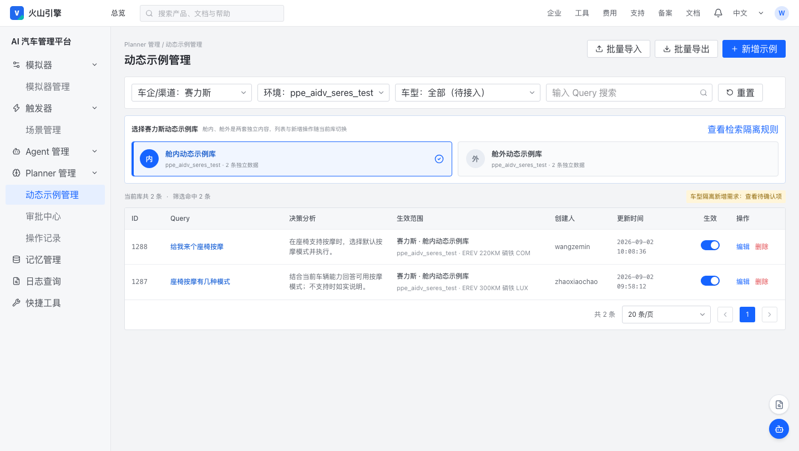
当前数据空间明确为赛力斯、当前环境、舱内；只展示舱内库内容。
打开交互原型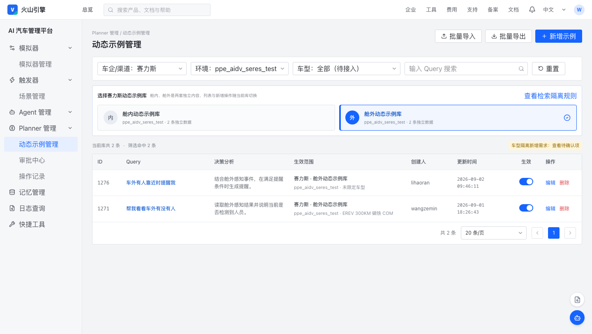
切换舱域后进入独立舱外库；页面持续展示当前数据空间，避免误维护。
打开交互原型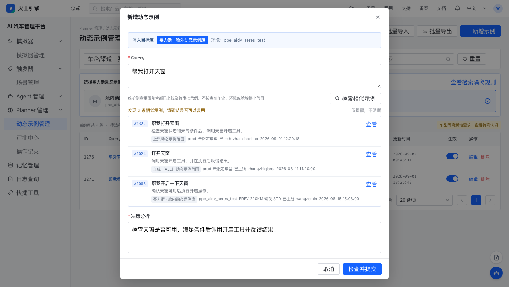
相似项跨车企、环境、舱域和车型召回，展示来源范围，仅作软提醒。
打开交互原型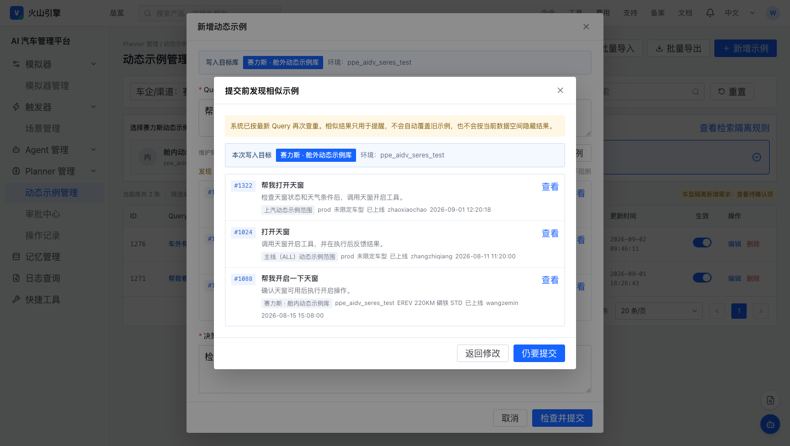
以最终 Query 再查一次；若出现新相似项，用户确认后仍可提交审批。
打开交互原型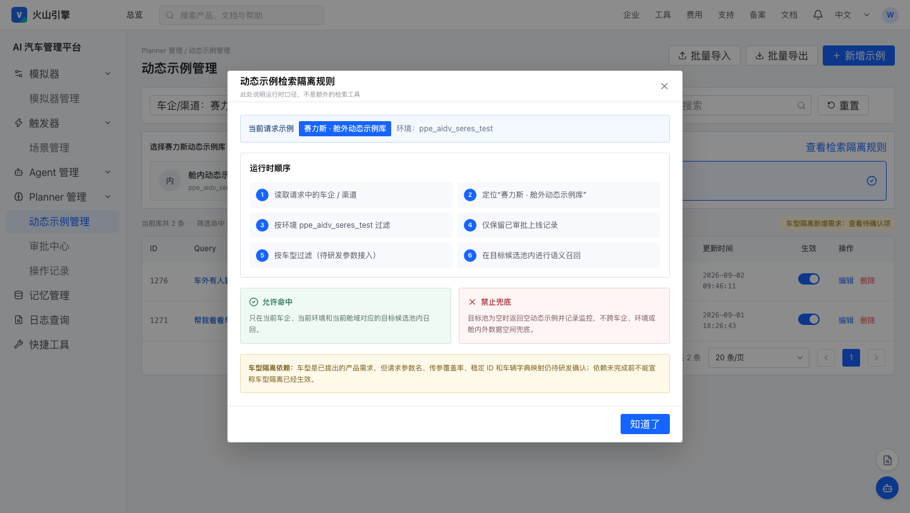
先按车企、环境和舱域定位目标池，再做语义召回；赛力斯舱内、舱外禁止互相兜底。
打开交互原型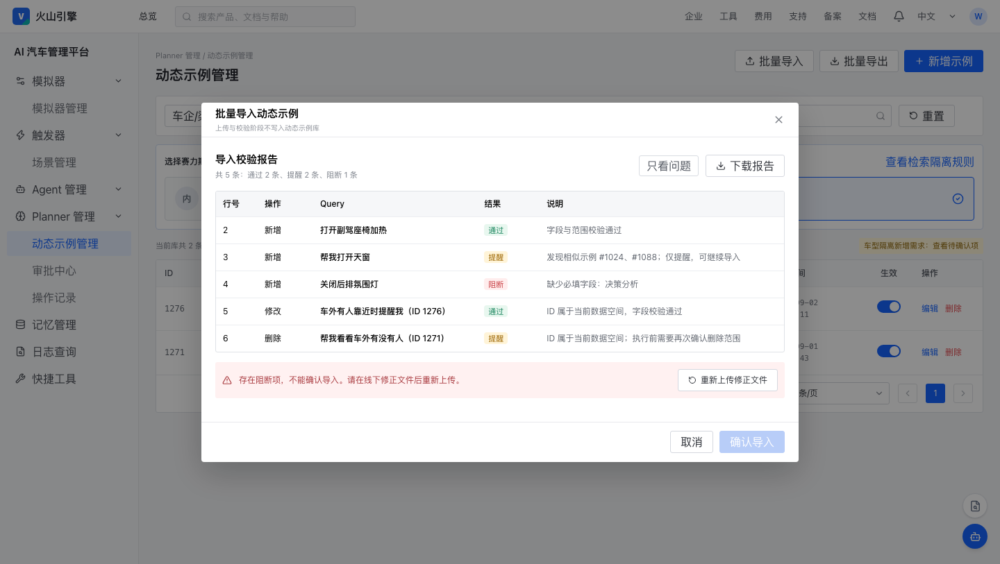
展示通过、警告、错误及行级原因；有错误时只能下载报告并离线修正。
打开交互原型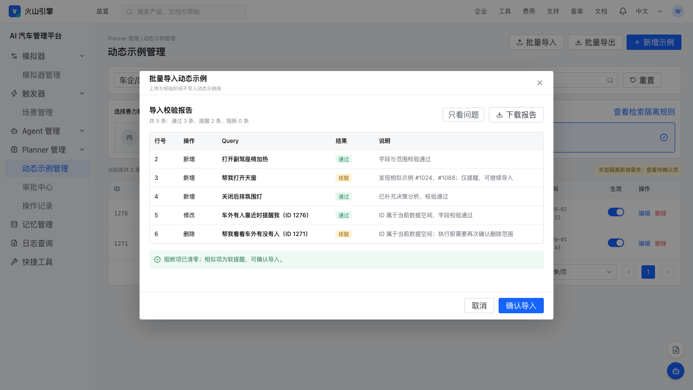
用户在线下修正并重新上传；阻断项清零后才开放确认导入，相似项仍为软提醒。
打开交互原型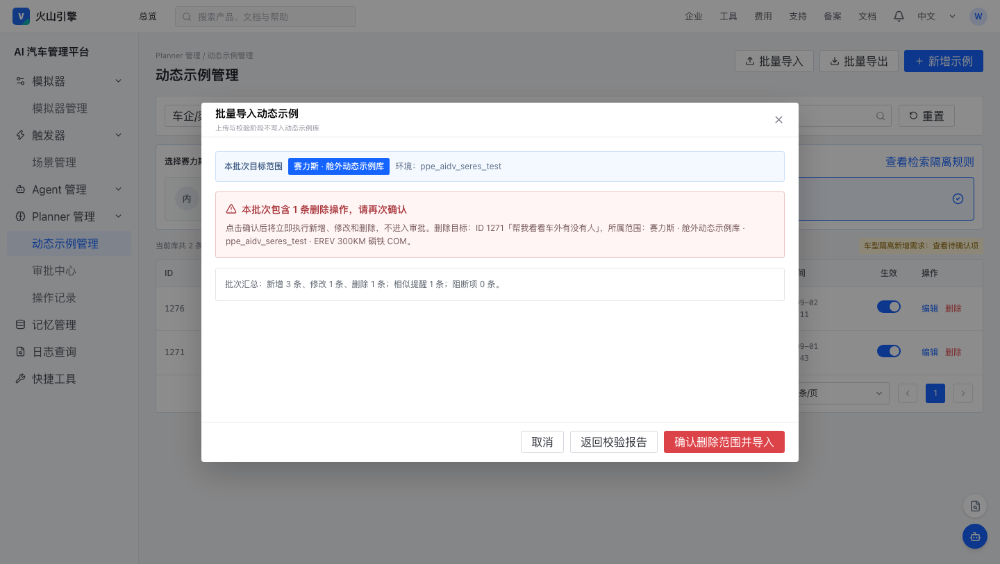
错误清零且批次包含删除时，确认框明确删除数量、目标范围和不可误操作提示。
打开交互原型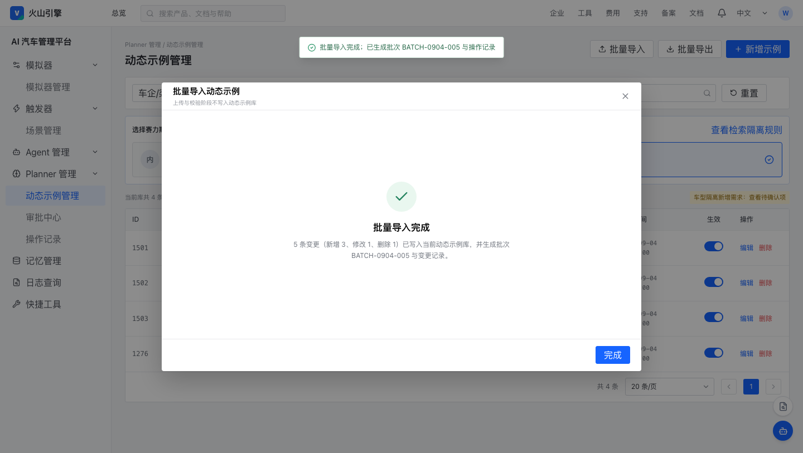
白名单管理员确认后直接导入，生成批次 ID 与新增/修改/删除操作结果，不生成审核任务。
打开交互原型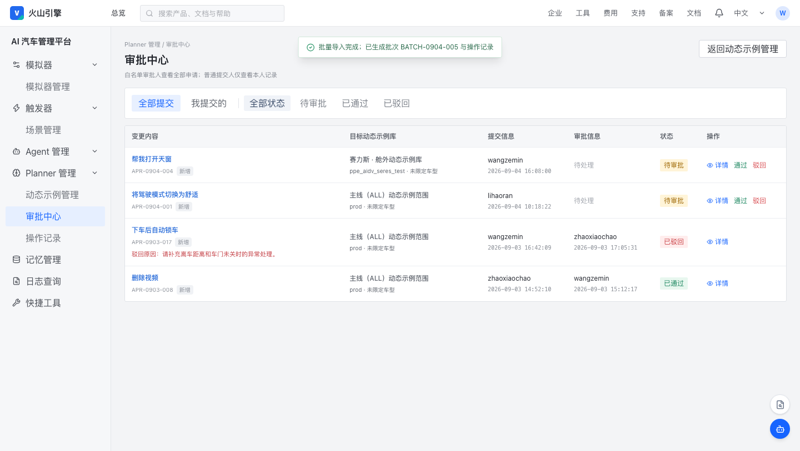
普通维护者查看自己的提交结果；白名单管理员查看全量单条新增/编辑申请。
打开交互原型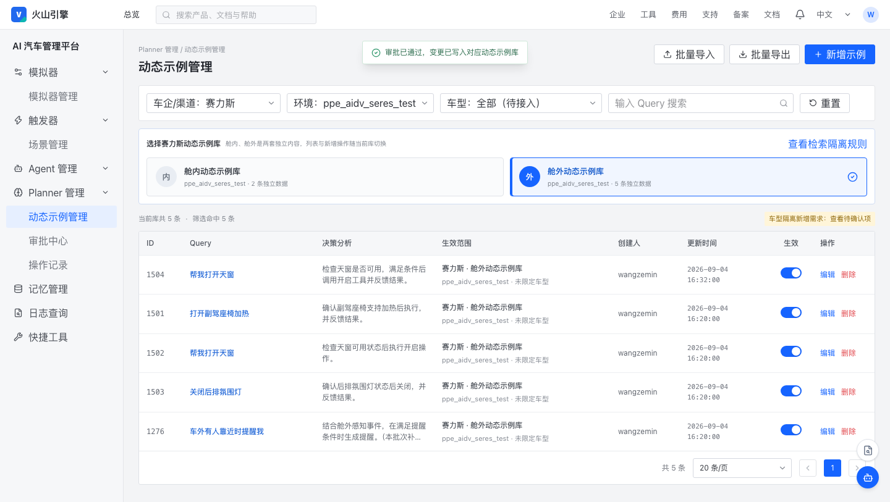
单条申请通过后按所选范围生效；本例只进入赛力斯舱外动态示例库。
打开交互原型审批生效后切换到舱内库，刚才的舱外记录不可见，证明管理范围隔离。
打开交互原型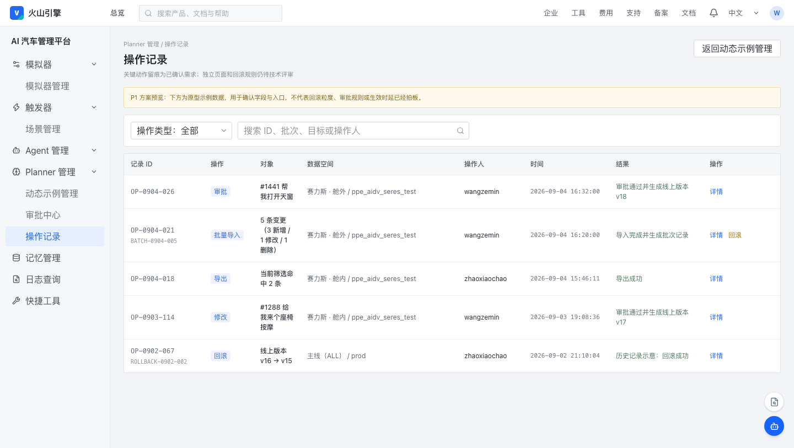
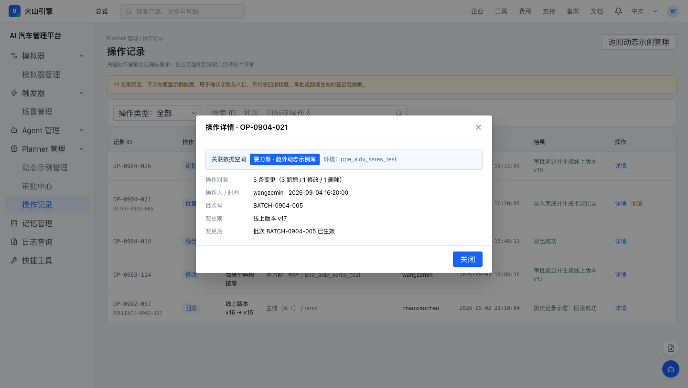
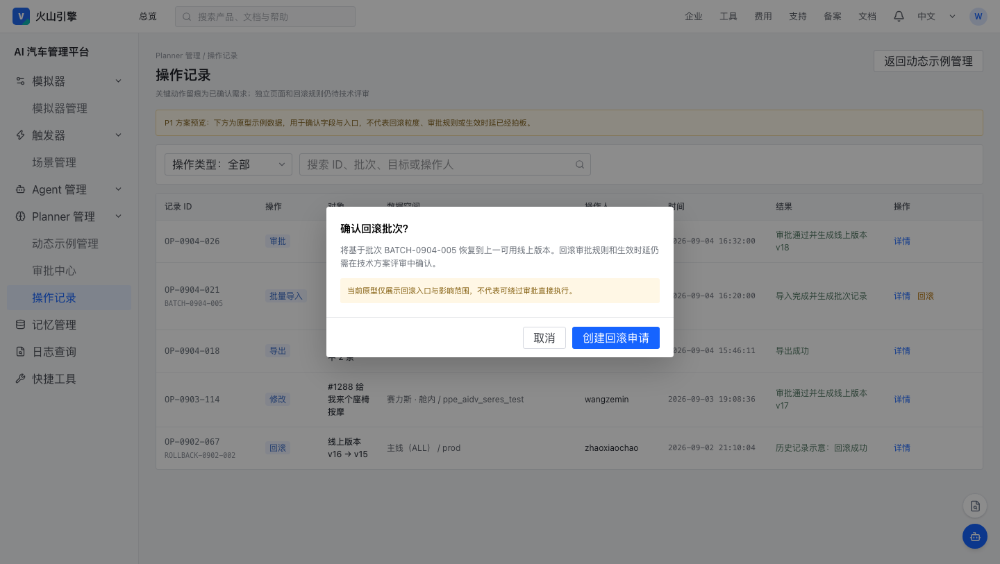
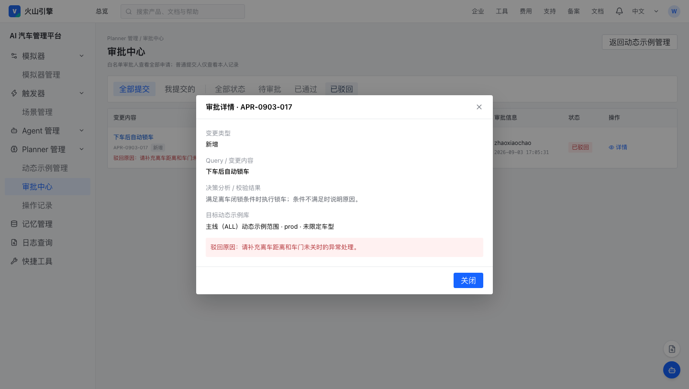
审核人核对单条内容、范围与相似项；驳回必须填写原因，提交人可查看并重提。
打开交互原型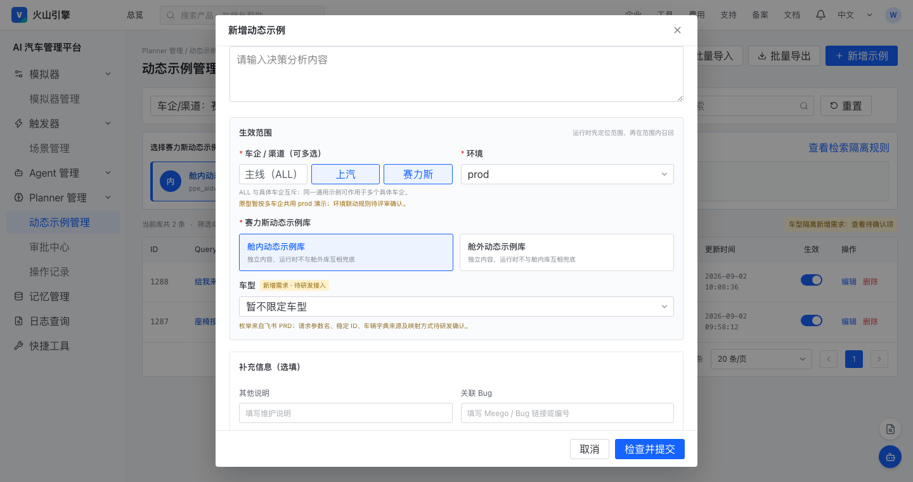
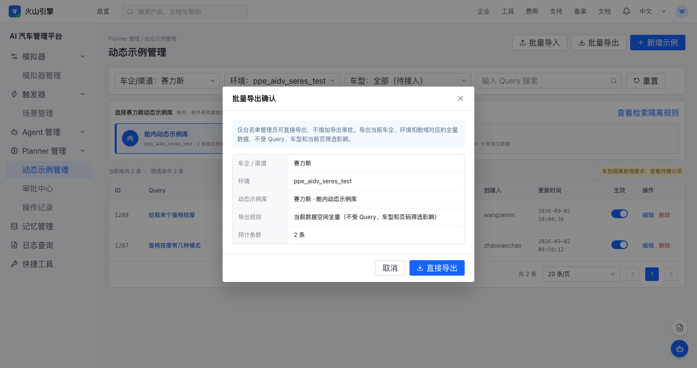
只按当前车企 × 环境 × 舱域导出全量数据，不受 Query、车型筛选或页码影响。
打开交互原型查重是帮助用户判断的建议，不是硬性拦截；运行时隔离规则不用于缩小维护查重范围。
Query 为空或尚未触发检查。点击提交时先进入服务端二查，不能绕过查重。
展示加载状态并阻止重复触发；不清空用户已填写的其他字段。
显示“暂未发现相似示例”；用户可继续提交审核。
展示相似列表和来源范围；提示用户先判断是否应维护旧记录，但保留“仍要提交”。
保留表单并说明失败，可重试。提交时仍须二查；二查不可用时不得假装检查通过。
用户在检查后又修改 Query，旧结果失效，页面恢复待检查提示；提交触发新 Query 的二查。
若二查发现页面首次检查后新出现的相似项，弹出二次确认：展示新增相似项；用户可返回修改，也可确认“仍要提交”。二次确认仅对当前内容有效；再次修改 Query 后须重新确认。
上传并不等于写入。系统先校验并产出报告，只有阻断错误为 0 后才能确认导入。
| 规则 | 新增 ADD | 修改 UPDATE | 删除 DELETE |
|---|---|---|---|
| 操作类型 | 必填 ADD | 必填 UPDATE | 必填 DELETE |
| ID | 留空，由系统生成 | 必填，且必须存在 | 必填，且必须存在 |
| Query / 决策分析 | 必填 | 必填 | 可留空，以 ID 为目标 |
| 适用范围 | 按字段校验 | 按更新后字段校验 | 读取系统现有记录展示确认 |
| 相似检查 | 全范围检查，命中记“警告” | Query 变化时检查，排除自身 ID | 不适用 |
固定模板不得合并单元格。列至少包括：操作类型、ID、车企/渠道、环境、舱域、Query、决策分析、其他说明/备注、方案类型、关联 Bug。模板中的字段名、枚举值、填写示例和必填说明由平台提供。车型列只有在后续车型能力正式立项并完成字段方案后才加入。
| 级别 | 典型情况 | 页面处理 | 是否允许确认导入 |
|---|---|---|---|
| 通过 | 格式、必填、ID、枚举、范围均合法，未发现相似项 | 展示“通过” | 允许 |
| 警告 | 发现相似示例 | 备注列展示 Top N 相似项的 ID、Query 和范围；可下载报告核对 | 允许，确认时再次提示 |
| 错误 | 缺 Query/决策分析、非法枚举、重复行冲突、UPDATE/DELETE 的 ID 不存在、文件结构错误 | 定位 Sheet/行/列和原因；不得写入 | 不允许，错误必须为 0 |
导出当前数据空间的全部记录与全部字段，不等于只导出当前分页。
审批只覆盖单条新增/编辑；审批中心独立于线上动态示例列表，普通用户看自己的提交结果，审核人看全量。
维护查重“看全量”，运行时检索“先隔离”。二者目的不同，禁止共用同一范围规则。
| 维度 | 选择方式 | 规则 | 当前口径 |
|---|---|---|---|
| 车企 / 渠道 | 多选标签 | 支持上汽、赛力斯、ALL；ALL 与具体车企互斥。通用规则可选择多个车企。 | 已确认 |
| 环境 | 单选 | 一条记录只归属一个环境；需要从测试环境推广到生产环境时，按编辑/审核流程变更。 | 已确认 |
| 舱域 | 单选 | 至少支持舱内、舱外。赛力斯两者对应不同动态示例内容与不同运行时检索池。 | 已确认 |
| 车型 | 原型暂按单字段选择 | 四个枚举见下一节；请求参数、字典来源、通用车型口径仍需研发确认。 | 待确认 |
9 月 2 日异常排查说明车型配置差异可能导致动态示例与车书 QA 冲突，但现有请求是否携带车型参数尚未确认。
EREV 220KM 磷铁 STDEREV 220KM 磷铁 COMEREV 300KM 磷铁 COMEREV 300KM 磷铁 LUX不把车型自行拆成“车系 → 车型 → 配置款”三级，也不引入此前文档中没有依据的层级 ID、继承/覆盖/排除模型。若后续确需车系或配置款层级，应在参数与业务规则确认后另开需求。
关键动作留痕是已确认需求；独立操作记录页面、版本快照和回滚只作为 P1 方案预览，不在本稿中视为已交付。
原型中的“操作记录/回滚”页面仅用于讨论 P1 信息结构，不代表独立页面、回滚能力或其生效时延已经确认。
页面状态、审批状态、线上生效状态需要分开表达，避免“待审核但已经上线”。
待审核可被驳回；驳回后进入“已驳回”，用户修改并重新提交。已驳回不参与运行时检索。本期不增加草稿或草稿箱状态。
新版本被驳回时，旧版本继续在线，不受影响。
| 状态 | 是否可编辑 | 是否参与运行时检索 | 下一步 |
|---|---|---|---|
| 待审核 | 不直接编辑；撤回能力待确认 | 新增否；修改时旧版本仍参与 | 通过或驳回 |
| 已驳回 | 提交人可基于驳回版本修改 | 否；若是修改，旧线上版本仍参与 | 重新提交 |
| 已上线 | 可发起新的单条编辑 | 是 | 编辑；停用/删除流程待确认 |
| 已停用 / 已删除 | 单条停用、删除及恢复的审批与状态规则待确认，不作为本期已确认流程 | ||
首版使用最小可行白名单；页面权限与服务端校验必须一致。
| 能力 | 普通维护者 | 审核人 / 管理员 | 服务端要求 |
|---|---|---|---|
| 查看动态示例 | 按现有模块权限 | 按现有模块权限 | 不得仅依靠按钮隐藏 |
| 单条新增 / 编辑 | 可 | 可 | 提交审批，不得直接越过审批上线；本期无草稿箱 |
| 查看审批结果 | 仅自己的提交 | 全量 | 按提交人身份过滤 |
| 通过 / 驳回 | 不可 | 可 | 审核人白名单校验；无权限返回明确错误 |
| 批量导入 | 不可 | 可 | 管理员白名单校验；错误清零、必要的删除确认后直接导入并留痕 |
| 全量导出 | 不可 | 可 | 管理员白名单校验并记录审计日志 |
| 回滚 P1 预览 | 当前无 | 当前无 | 是否立项、权限、粒度与审批规则均待确认 |
沿用一期字段并增加二期范围、审批、批次和审计字段；不引入无来源的技术实体。
| 字段 | 用途 / 展示 | 新增/编辑 | 批量模板 | 校验规则 |
|---|---|---|---|---|
| ID | 记录唯一标识 | 系统生成 | ADD 留空；UPDATE/DELETE 必填 | 更新或删除时必须存在 |
| Query | 用户说法 / 检索文本 | 必填 | ADD/UPDATE 必填 | 非空；变化后查重结果失效并重建索引 |
| 决策分析 | 向 Planner 提供的决策示例 | 必填 | ADD/UPDATE 必填 | 非空 |
| 车企 / 渠道 | 适用企业范围 | 必填，多选 | 必填 | 上汽、赛力斯、ALL；ALL 与具体值互斥 |
| 环境 | 适用运行环境 | 必填，单选 | 必填 | 仅允许平台字典值 |
| 舱域 | 舱内 / 舱外数据空间 | 必填，单选 | 必填 | 至少舱内、舱外；参与运行时过滤 |
| 车型 需求预览 | 未来车型范围 | 仅原型展示，不作为本期真实字段 | 本期模板不包含 | 四个枚举仅供评审；参数、字典、运行时未交付 |
| 方案类型 | 一期已有方案字段（如 SFT/PE） | 沿用一期 | 沿用一期 | 使用现有枚举 |
| 其他说明 / 备注 | 维护补充说明 | 选填 | 选填 | 文本 |
| 关联 Bug | 追溯需求来源 | 选填 | 选填 | 链接或编号格式按现平台约束 |
| 状态 | 待审/驳回/上线，以及批量校验/完成状态 | 系统流转 | 不由用户直接指定 | 单条审批状态与批量导入状态分开 |
| 批次 ID | 关联同一次批量导入 | 无 | 确认导入后系统生成 | 唯一、不可编辑 |
| 操作类型 | 新增/修改/删除 | 由入口确定 | 必填 | ADD / UPDATE / DELETE |
| 创建/更新信息 | 人、时间 | 系统记录 | 系统记录 | 不可伪造或手工覆盖 |
| 审批信息 | 提交人、审核人、时间、结果、驳回原因 | 系统记录 | 系统记录 | 驳回原因必填 |
| 生效信息 | 生效状态、版本、生效时间 | 系统记录 | 系统记录 | 审核通过后更新 |
ID、Query、决策分析摘要、车企/渠道、环境、舱域、车型（若可用）、创建/更新人、更新时间。页面不显示相似度数字，以免用户把未确认阈值误解为硬拦截规则。
失败必须显式告知，不得把“读取失败/检索失败”当作“没有数据”。
| 场景 | 系统处理 | 用户可执行动作 |
|---|---|---|
| 单条相似检查超时/失败 | 保留当前表单、显示失败原因或重试提示；不展示“无相似项” | 重试；提交仍必须二查 |
| 提交二查失败 | 不生成“已检查通过”的假结果，不创建待审记录 | 保留当前填写内容并稍后重试 |
| 导入文件结构不符 | 整批不进入写入阶段；指出 Sheet/列问题 | 下载模板、离线修复后重传 |
| 导入中部分行错误 | 报告区分错误和警告；错误大于 0 时禁用确认导入 | 导出报告、筛选错误行并修复 |
| UPDATE/DELETE 的 ID 不存在 | 该行记错误，不把 UPDATE 当 ADD | 修正 ID 或改为合法 ADD |
| 同一文件内对同一 ID 多次操作 | 记冲突错误，不猜测执行顺序 | 合并为单一最终操作后重传 |
| 目标运行时数据池为空 | 返回空动态示例并上报监控；不跨车企/环境/舱域兜底 | 平台维护者在正确数据空间补充示例 |
| 运行时缺 scene_domain | 记录参数异常；不得把舱内/舱外混合检索 | 由调用链路研发排查并补齐参数 |
| 车型参数缺失/未知 | 待确认最终兜底规则，上线前必须明确并监控 | 研发核对参数与车型字典 |
| 无审批权限直接调接口 | 服务端拒绝并返回“无审批权限，请联系审核人” | 联系白名单审核人处理 |
| 已上线记录存在待审修改 | 旧版本继续生效；列表同时标记“已上线 + 有待审变更” | 查看 Diff 或审批记录 |
| 导出失败 | 不生成空文件冒充成功；记录失败日志 | 重试或联系平台排查 |
验收覆盖页面、权限、数据写入与运行时结果；只验证 UI 字段存在不算通过。
| ID | 验收场景 | 前置 / 操作 | 预期结果 |
|---|---|---|---|
| AC-01 | 查重无结果 | 输入一个库内无相似内容的 Query 并检查 | 状态为“未发现相似项”，可继续提交审批；页面无草稿入口 |
| AC-02 | 查重跨范围 | 在赛力斯舱内新增与上汽 PROD 相似的 Query | 返回上汽记录并展示其范围；不隐藏、不硬拦截 |
| AC-03 | 范围不同允许提交 | 相似列表有赛力斯舱外记录，用户点击仍要提交 | 可进入审批，原记录不被覆盖 |
| AC-04 | Query 修改使结果失效 | 查重后修改 Query | 状态变为结果已过期，提交按新 Query 二查 |
| AC-05 | 提交二查命中新记录 | 首次检查后库中新出现相似项，再提交 | 展示新增相似项并要求确认，不能静默提交 |
| AC-06 | 导入错误阻断 | ADD 行缺 Query 或 UPDATE 的 ID 不存在 | 报告定位具体行列；确认导入不可用；正式库无变化 |
| AC-07 | 导入重复仅提醒 | 上传包含相似 Query、其余字段合法的文件 | 行状态为警告并显示 Top N 相似项；仍可确认 |
| AC-08 | 报告离线闭环 | 下载报告、修复 Excel、重新上传 | 新文件重新校验；错误为 0 后可确认导入 |
| AC-09 | 批量删除二次确认与直接导入 | 合法批次含 DELETE，白名单管理员确认 | 弹窗显示删除数量和目标；取消则不写入，确认后直接执行新增/修改/删除并生成批次记录，不产生审批单 |
| AC-10 | 普通用户审批可见性 | 普通用户打开审批中心 | 只看到本人提交，无法审批他人记录 |
| AC-11 | 驳回与重提 | 审核人填写原因并驳回 | 提交人可见原因并重提；旧审批记录保留 |
| AC-12 | 编辑上线隔离 | 修改已上线记录并等待审批 | 旧版本继续生效；新版本通过后才切换 |
| AC-13 | 导出固定按当前范围全量 | 列表设置 Query、车型筛选并停留在任意页，管理员确认全量导出 | 文件包含当前车企 × 环境 × 舱域的全部记录与全部字段，不受 Query、车型或页码影响 |
| AC-14 | 导出权限 | 普通用户直接调用导出接口 | 服务端拒绝并给出权限提示；产生安全日志 |
| AC-15 | 赛力斯舱内命中 | 舱内、舱外配置相同 Query 但不同决策；运行时请求为舱内 | 只返回舱内决策，舱外决策不进入候选 |
| AC-16 | 赛力斯舱外命中 | 同上，运行时请求改为舱外 | 只返回舱外决策 |
| AC-17 | 舱域空池 | 赛力斯舱内目标池为空，舱外存在强相似项 | 返回空动态示例并记录监控；绝不返回舱外内容 |
| AC-18 | 跨车企隔离 | 赛力斯目标池为空，上汽 PROD 有强相似项 | 运行时不跨车企召回 |
| AC-19 | UI 与检索同步 | 后台把记录标为赛力斯舱外并审核上线 | 只有舱外请求可召回；若舱内也能召回则整项不通过 |
| AC-20 | 车型隔离 | 请求参数与字典接入完成后，用两个车型配置冲突决策 | 各车型只召回自身适用记录；在前置条件未完成前，此项状态保持“未交付” |
用能力依赖分阶段，不在需求尚未评估时写死日期。
单条查重六状态与二查、单条审批中心、白名单批量导入闭环，以及车企 × 环境 × 舱域字段和运行时隔离。
全量导出与关键动作留痕；独立操作记录页、版本快照和回滚仅作方案预览，评审确认后再进入实现。
当前只展示车型字段需求。车型请求参数、权威字典与运行时过滤尚未交付，前置条件确认后另行排期和验收。
channel、env、scene_domain。以下问题不允许在开发过程中自行猜测；需形成评审结论并回写 PRD。
| 优先级 | 待确认问题 | 建议责任方 | 不确认的风险 |
|---|---|---|---|
| P0 | 相似结果 Top N 最终取 3 还是 5？是否仅返回有效记录，停用记录和历史版本是否排除？ | 产品 + 检索研发 | 前后端口径不一致，报告无法稳定验收 |
| P0 | 查重服务不可用时，提交是阻断还是允许带风险标记进入审批？ | 产品 + 服务端 | 可能绕过质量门禁或阻塞维护 |
| P0 | scene_domain 的参数名、来源、必填时机，以及非赛力斯渠道是否同样使用舱域？ | Planner/SP 链路研发 | 页面字段上线但运行时仍混库 |
| P0 | ALL 与多车企标签在不同舱域下的准确含义；同一条记录多车企生效时如何校验冲突？ | 产品 + 服务端 | 通用规则可能误跨范围 |
| P0 | 单条删除、停用、缩小适用范围是否需要审批？批量导入删除已确认由白名单管理员二次确认后直接执行。 | 产品 + 审核人 | 单条线上数据可能被直接移除 |
| P1 | 单条申请待审期间是否支持提交人撤回？管理员勾选多条单条申请统一处理时，是否允许部分通过？ | 产品 + 前后端 | 异常申请处理成本高 |
| P1 预览 | 独立操作记录页面是否立项，页面范围、筛选字段和与现有日志的关系是什么？ | 产品 + 前后端 | 原型预览被误认为已确认交付 |
| P1 预览 | 回滚粒度是单条、批次还是两者；回滚是否需要审批；旧索引切换时延是多少？ | 服务端 + 产品 | 出现线上问题时无法安全恢复 |
| 车型前置 | 运行时是否已有稳定车型标识？权威车型字典来自哪里？请求缺车型时如何处理？ | Planner/SP 链路研发 | 不能真正实现车型隔离 |
| 车型前置 | 四个车型枚举是否为完整正式名称；是否需要“全部车型”以及一条规则多车型生效？ | 业务 + 车型数据 Owner | 新增记录无法准确表达通用/专属范围 |
遇到旧稿与会议结论冲突时，以后发生且已明确达成的结论为准；未形成结论的内容保持“待确认”。
| 来源 | 已吸收结论 | 对应章节 |
|---|---|---|
| 飞书：planner 动态示例后台 PRD | 一期现状；二期五块需求；字段；批量模板；审核状态；车企×环境×舱域；四个车型枚举；运行时先过滤后召回；空池不兜底 | 03、05、09、11—13、17 |
| 2026-08-12 动态示例后台迭代需求对齐 | 相似结果不做阈值配置/分数展示；查重软提醒且可继续提交；跨范围召回；取消草稿箱；自测截图继续随 Meego / Bug 单流转；白名单管理员完成批量校验后直接导入并生成批次记录；导出当前车企 × 环境 × 舱域全量且无审批；单条新增/编辑进入审批；环境单选 | 05、08—11、14—17、19 |
| 2026-09-02 上汽 D6X 车书 QA 异常问题排查 | 动态示例尚未按车型隔离，可能与车型配置知识冲突；需要进一步确认车型参数、分库范围与端到端方案 | 13、18—21 |
| 舱内/舱外补充聊天与飞书评论 | 赛力斯舱内、舱外是两套不同动态示例，SP 检索内容不同；参与运行时查询条件，不是只用于后台维护和筛选 | 06、12、19 |